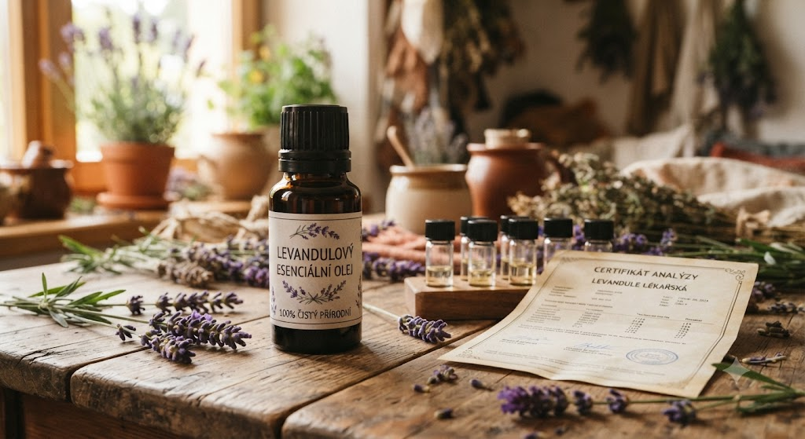

🌿 Lekce 4
jak se kvalita oleje ověřuje v praxi
V minulé lekci jsme si řekli, na co se zaměřit při výběru jako kupující. Teď se podíváme na to, jak kvalitu esenciálního oleje ověřují samotní výrobci.

Kvalitní výrobci nespoléhají jen na to, že rostlina je přírodní. Aby zaručili stálou kvalitu a čistotu, ověřují každou šarži oleje laboratorními testy — nejen podle vůně nebo vzhledu.
Ukážeme si to na příkladu firmy BEWIT, jejíž oleje osobně používám. Pro sledování, kontrolu a vyhodnocování kvality vyvinula vlastní systém norem a protokolů CTEO — Certified Therapeutic Essential Oils.
Plynová chromatografie a hmotnostní spektrometrie — zjišťuje přesné složení, odhaluje příměsi i těžké kovy.
Mikrobiální testování — kontrola přítomnosti nebezpečných látek: kvasinky, viry, bakterie a plísně.
Senzorické testování — chutí, pohledem, dotekem, vůní a zkušeností těch nejlepších odborníků.
Firma nepoužívá ve svých výrobcích nanotechnologie a netestuje výrobky na zvířatech.
Tahle úroveň kontroly není samozřejmostí u každého výrobce — právě proto jsme si v minulé lekci říkali, že transparentnost (informace o původu, způsobu získávání i testování) je jedním z hlavních znaků, podle kterých kvalitního výrobce poznáte.
Kvalitní výrobci ověřují každou šarži oleje laboratorními testy, ne jen podle vůně nebo vzhledu.
Chromatografie a mikrobiální testování odhalí příměsi, těžké kovy i nebezpečné mikroorganismy.
Transparentnost výrobce o testování je jedním ze znaků, podle kterých poznáte kvalitní olej.
Další lekce: Bezpečnost při používání esenciálních olejů — pokračovat →